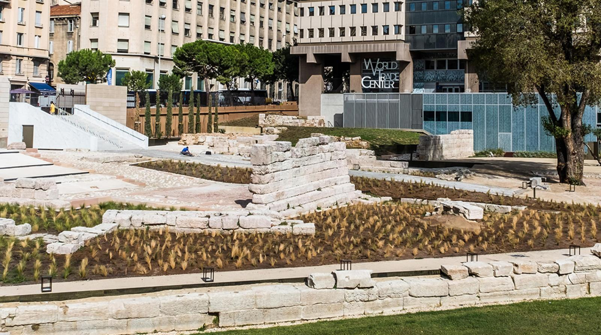
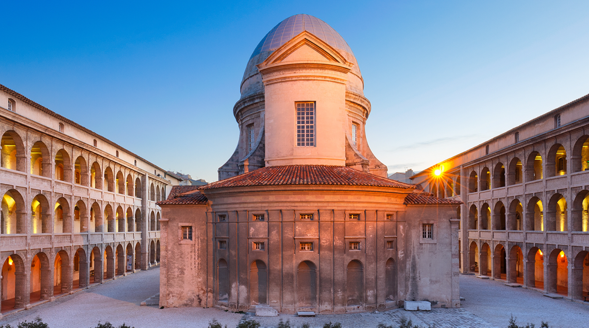

Le Musée des Beaux-Arts de Marseille est un des quinze premiers musées créés en France par le Consulat en 1801.
Il est installé depuis 1869 dans l’aile gauche du Palais Lonchamp et présente des œuvres du XVIe au XIXe siècles.
Programme
Horaires
Actuellement fermé Du mardi au dimanche de 9h à 18h
Fermeture hebdomadaire le lundi, sauf les lundis de Pâques et de Pentecôte.
Fermeture les jours suivants : 1er janvier, 1er mai, 1er et 11 novembre et le 25 décembre.
Fermeture de la billetterie 30 minutes avant la fermeture du musée.
► En cas d’épisodes de vents violents, le parc Longchamp peut être amené à fermer, empêchant l’accès au musée.
Nous vous invitons à contacter l’accueil du musée par téléphone avant de vous déplacer afin de vérifier son ouverture effective.
► Afin d'être certain de pouvoir bénéficier de la visite complète de toutes nos salles d'exposition,
nous vous invitons à contacter le Musée avant votre visite
Adresse et Contacte
Adresse
Musée des Beaux-Arts
Palais Longchamp
Aile gauche
13004 Marseille
Contact
Contact :
04 91 14 59 30
Réservation :
04 91 14 59 35
Mail :
musee-beauxarts@marseille.fr
Adresse postale :
Musée des Beaux-Arts
Palais Longchamp
13233 Marseille Cedex 20
Tarifs
Collections permanentes : gratuit pour tous
Musée D'histoir de Marseille
Ce musée de la plus ancienne ville de France permet de découvrir 26 siècles d’histoire où se mêlent archéologie, beaux arts, objets du quotidien et architecture.
Il est organisé en 13 séquences ponctuées de dispositifs numériques.

Horaires
Actuellement fermé Du mardi au dimanche de 9h à 18h
Fermeture hebdomadaire le lundi, sauf les lundis de Pâques et de Pentecôte.
Fermeture les jours suivants : 1er janvier, 1er mai, 1er et 11 novembre et le 25 décembre.
Fermeture de la billetterie 30 minutes avant la fermeture du musée.
►Afin d'être certain de pouvoir bénéficier de la visite complète de toutes nos salles d'exposition, nous vous invitons à contacter le Musée avant votre visite.
►Le Musée d'Histoire de Marseille dispose d'un centre de documentation.
Uniquement sur rendez-vous par mail : documentation-mhm@marseille.fr et au 04 91 55 36 20
Adresse et Contacte
Adresse
2 rue Henri Barbusse - 13001 Marseille
Contact
- Téléphone : 04 91 55 36 00
- Mail : musee-histoire@marseille.fr
Tarifs
Collections permanentes : gratuites
Entrée gratuite tous les premiers dimanches du mois
Entrée gratuite pour les moins de 18 ans
Gratuit pour les scolaires et centres de loisirs
Un musée d'Histoire pour un patrimoine vivant :
Marseille se dote d’un musée d’Histoire en 1983.
Véritable musée de site, il s’inscrit pleinement dans les aménagements du Centre Bourse dont le chantier permit aux archéologues de mettre au jour entre 1967 et 1983 les vestiges monumentaux de la cité grecque et romaine.
Conservés in situ, ces vestiges forment une introduction idéale à la visite du musée.
En 2013, le Musée d’Histoire de Marseille rouvre ses portes dans un tout nouveau parcours muséographique,
didactique et numérique, allant de la Préhistoire à nos jours. Cet ensemble patrimonial, musée et site,
offre au public des clés de lecture pour comprendre la ville d’aujourd’hui et son évolution.
UN MUSÉE D’HISTOIRE, UN MUSÉE DE VILLE
Musée moderne et accessible à tous, il propose une offre culturelle innovante et pédagogique.
Les dispositifs multimédia présents dans le musée,
sur le site archéologique de la Bourse et à travers la ville – le long de l’ancienne voie grecque jusqu’au fort Saint-Jean – permettent aux visiteurs de partir à la rencontre de Marseille et de ses habitants d’hier et d’aujourd’hui.
Les effets de la réalité augmentée, les reconstitutions en 3D,
les ambiances sonores permettent d’embarquer dans une grande machine à voyager dans le temps.
2 600 ANS D’HISTOIRE EN 13 SÉQUENCES
Le parcours muséographique s'appuie sur deux idées fortes : Marseille est la plus ancienne ville de France et c’est une ville portuaire ouverte sur la mer Méditerranée.
Partant de ces deux évidences, le visiteur découvre l’histoire de la ville grâce à un fil d’Ariane maritime reliant treize séquences chronologiques,
des premières occupations préhistoriques aux développements urbains contemporains.
Le Centre de la Vieille Charité abrite de nombreuses structures culturelles : le Musée d'Archéologie Méditerranéenne (MAM),
le Musée d'Arts Africains, Océaniens, et Amérindiens (MAAOA), une salle de cinéma d'arts et essais (Le Miroir),
le centre international de poésie Marseille (cipM),
l'École des Hautes Études en Sciences Sociales (EHESS) et le Centre National de Recherche Scientifique (CNRS).

Horaires
Actuellement fermé Du mardi au dimanche de 9h à 18h
Fermeture hebdomadaire le lundi, sauf les lundis de Pâques et de Pentecôte
Fermeture les jours suivants : 1er janvier, 1er mai, 1er et 11 novembre et le 25 décembre.
Fermeture de la billetterie 30 minutes avant la fermeture du musée.
► Afin d'être certain de pouvoir bénéficier de la visite complète de toutes nos salles d'exposition,
nous vous invitons à contacter le musée avant votre visite. Tel : 04 91 14 58 46.
Adresse et Contacte
Adresse
2, rue de la Charité
13002 Marseille
Contact
Tél. : 04 91 14 58 46
Tarifs
►L'accès au Musée d'Archéologie Méditerranéenne, (MAM), au Musée d'Arts Africains, Océaniens, Amérindiens, (MAAOA), est gratuit
►Pour favoriser l’accès à la culture pour toutes et tous,
la Ville de Marseille rend gratuit l’accès à cette exposition le premier jour de son ouverture ainsi que chaque premier dimanche du mois.
Aujourd'hui le Centre de la Vieille Charité abrite plusieurs structures multi-culturelles :
le Musée d'Archéologie Méditerranéenne, le Musée des Arts Africains, Océaniens, Amérindiens (MAAOA),
des expositions temporaires et une salle de cinéma, Le Miroir. L’ensemble est géré par la Direction des musées de Marseille.
D'autres organismes culturels se sont établis à la Vieille Charité comme le centre International de la poésie de Marseille (cipM.),
le Centre National de la Recherche Scientifique (CNRS) ou encore l'Ecole des Hautes Etudes en Sciences Sociales (l'EHESS).
Présentation
C'est en 1640, suite à l'édit royal sur "l'enfermement des pauvres et des mendiants",
que la Ville de Marseille décide la construction de la Vieille Charité, pour y accueillir les gueux.
Elle désigne alors un terrain dont elle est propriétaire, situé près de la cathédrale de la Major,
sur le versant nord de la Butte des Moulins. Mais le projet piétine et il faudra attendre 1670 pour que Pierre Puget,
architecte du Roi et enfant du quartier, entame une de ses plus grandes réalisations.
Ainsi, pendant plus d'un siècle, la Charité reçoit les gueux de la ville. Mais après la révolution, et jusqu'à la fin du XIXe siècle,
elle est transformée en hospice réservé aux enfants et aux vieillards. Puis en 1905, l'armée utilise le bâtiment qui sert aussi de logement social.
Au début des années 1940, Le Corbusier remarque l'édifice et dénonce son état d'abandon.
C'est en 1961 que la Ville de Marseille entreprend sa restauration. La remise en état s'achève en 1986, après 25 ans de travaux.
L’architecture
L'ensemble architectural de la Vieille Charité surprend par sa parfaite unité de style et sa cohésion fonctionnelle.
Construit en pierre rose et blanche de la carrière de la Couronne (petite localité au nord de Marseille),
les bâtiments se composent de quatre ailes fermées sur l'extérieur et ouvertes sur une cour rectangulaire.
Ces espaces sont reliés sur trois niveaux par des galeries. Et au centre de la cour,
une chapelle à coupole ovale, construite dans le style baroque.
Le fronton de l'édifice, à l'allure classique du style Second Empire,
reprend le thème de la Charité accueillant les enfants indigents, entourés par deux pélicans qui les nourrissent.